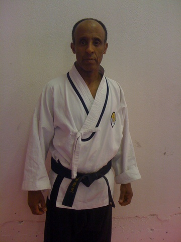

Innlegg
Vi har fått en Master i klubben

I Januar i år graderte vår kjære Yebio Fecadu til 4. dan i Korea. Han er da historisk som klubbens første master som har trent hos oss fra start.
Yebio er æresmedlem i klubben og er klubbens første medlem. Han var med, sammen med GM Cho på å stifte klubben i sin tid og vi er alle meget stolte av å ha han som master i klubben vår.
Gratulerer Master Yebio!